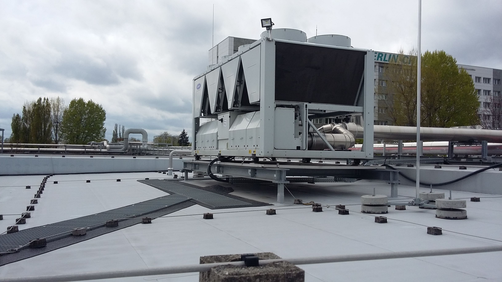
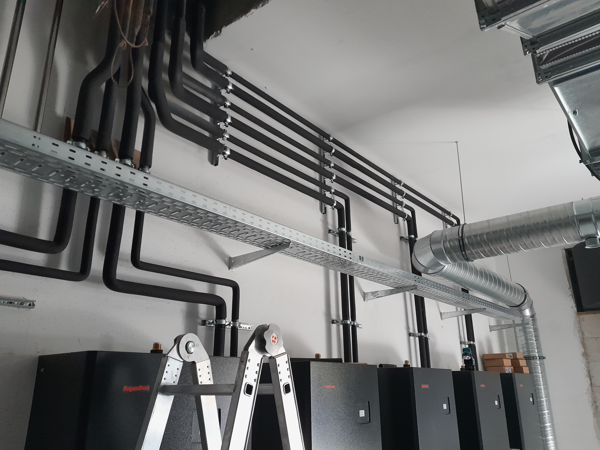
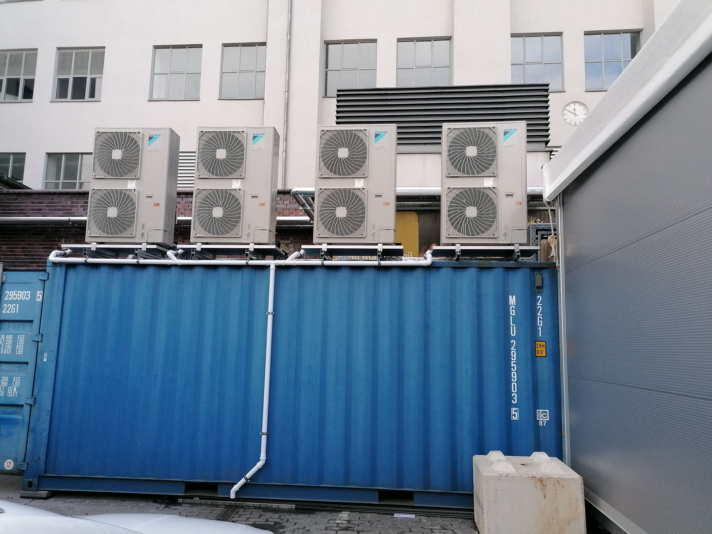
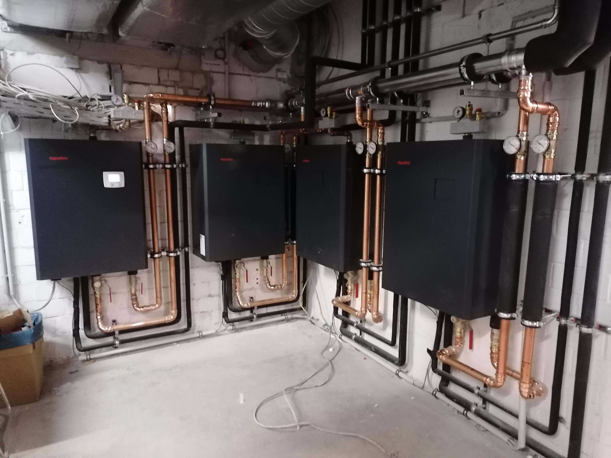
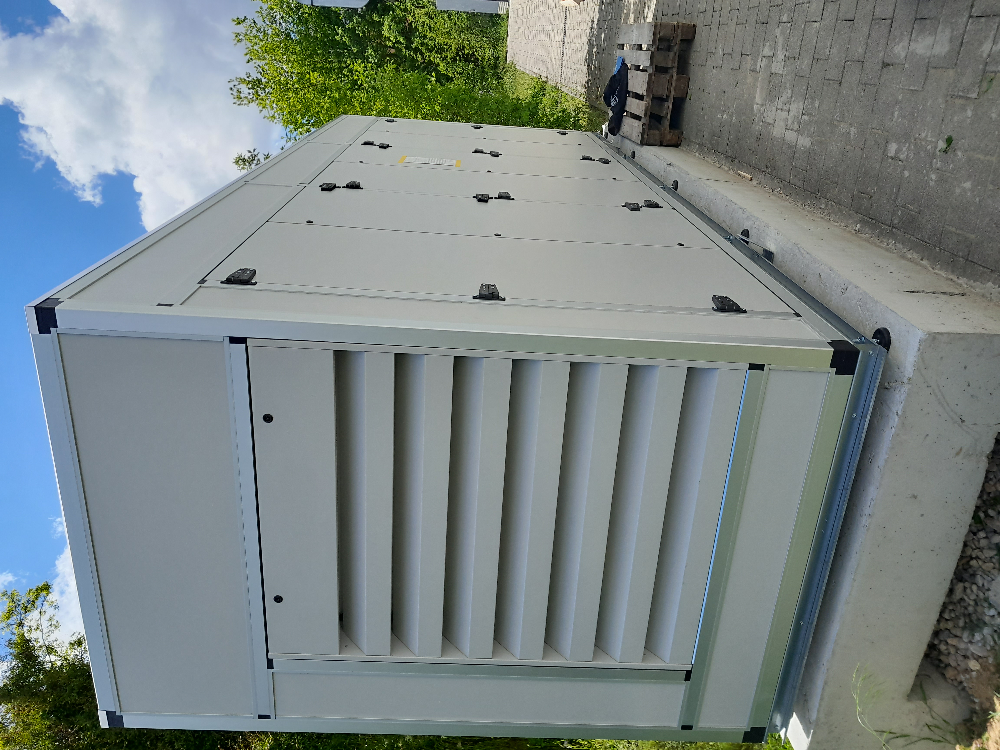
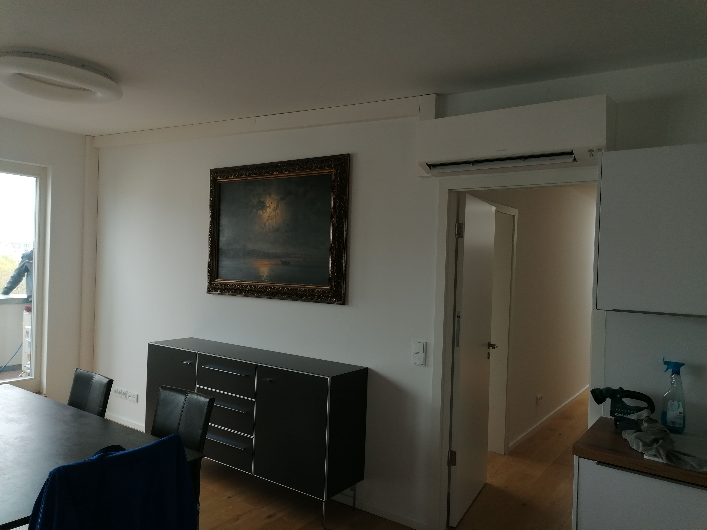

Service & Wartung
Kältetechnik
Service und Wartung von Kälteanlagen und Kaltwassersätzen – herstellerübergreifend und fachgerecht.
Klima · Kälte · Wärme · Lüftung
Ihr Fachbetrieb für Service, Wartung und Montage in Berlin, Magdeburg und Umgebung.
Daikin Fachpartner
Kompetenz vom Qualitätshersteller

Aus unserer Arbeit
Technik bis ins DetailUnsere Leistungen
Wir betreuen Anlagen nahezu aller Hersteller – persönlich, lösungsorientiert und mit langjähriger Erfahrung.
Service und Wartung von Kälteanlagen und Kaltwassersätzen – herstellerübergreifend und fachgerecht.
Split- und VRF-Klimaanlagen: zuverlässig betreut, regelmäßig gewartet und effizient betrieben.
Service für Luft-Wasser-, Wasser-Wasser-Systeme und Anlagen mit Erdkollektoren.
Wartung und Service für Lüftungsanlagen vieler Hersteller – für ein gutes und gesundes Raumklima.
Hinweis zur Montage Aus Gewährleistungsgründen montieren wir ausschließlich Klimageräte aus unserem eigenen Lieferprogramm: Daikin, Hitachi, Mitsubishi Heavy Industries und Mitsubishi Electric.
Starke Partnerschaften
Wir setzen auf bewährte Technik, direkten Herstellerkontakt und Lösungen, die langfristig überzeugen.
Autorisierte FachpartnerBestätigte Partnerschaften
Marken im LieferprogrammVon uns geliefert und montiert
DASA Service GmbH
Wir sorgen dafür, dass Ihre Anlagen dauerhaft zuverlässig und effizient arbeiten. Von der regelmäßigen Wartung bis zur schnellen Fehleranalyse steht Ihnen unser Team mit Erfahrung und technischem Know-how zur Seite.
Über unseren Hauptsitz in Magdeburg prüfen wir auf Anfrage auch individuelle Lösungen im Bereich Heizung.
Daikin Fachpartnerprofil ansehen ↗Unser AnspruchSaubere Arbeit.
Klare Lösungen.

Komm ins Team
Bei uns arbeitest du nicht an irgendeiner Anlage. Du sorgst dafür, dass Menschen sich auf ihre Technik verlassen können – mit Können, Verantwortung und einem Team, das anpackt.
Heizung · Sanitär · Klima
Heizung · Sanitär · Klima
Dann schreib uns einfach ein paar Zeilen. Alles Weitere – auch die Rahmenbedingungen – besprechen wir persönlich.
Einblicke in unsere Arbeit
Von der einzelnen Split-Klimaanlage bis zur komplexen Kälte- und Wärmetechnik: ausgewählte Eindrücke aus realisierten Projekten unseres Teams.



Aus Gründen des Kundenschutzes zeigen wir keine Objekt- oder Kundennamen.
Vor Ort für Sie
Direkter Service für Berlin, Magdeburg und die jeweilige Umgebung.
Niederlassung Berlin
Hauptsitz
Direkt & unkompliziert
Schildern Sie uns Ihr Anliegen per E-Mail. Wir melden uns persönlich bei Ihnen zurück.
info@dasa-service.de ↗Für Berlin & Magdeburg